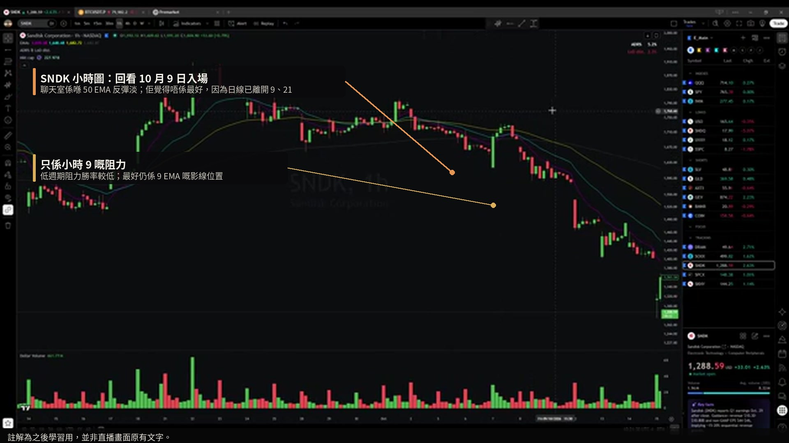

概要
回看一筆「還可以但唔係最好」嘅入場
1:01:18 有人問 10 月 9 日在 50 EMA 反彈淡 SNDK 點樣。佢覺得唔係最好，因為日線已經離開 9 同 21。不過弱市裏面，呢類還可以嘅入場有時會行得好好。呢筆只係小時 9 EMA 嘅阻力；淡喺低週期阻力，勝率會較低。最好仍然係 9 EMA 上面嗰啲影線。如果錯過最好位置但仍想參與，可以當還可以嘅入場，但要知勝率低、好容易被停，如果再彈上下降 9 同 21，就要準備再入。
圖一
SNDK 小時圖：回看 10 月 9 日入場
直播 1:01:40

原話
What do you think about my short entry on SNDK on 9th of October on the bounce on the 50 EMA? It's not the best one, because it is a little bit extended on the daily from the 9 EMA and 21 as well. But you know what, sometimes like a fair entries could work very great, could work beautifully in the weak markets, like when you're really nailing the trend. So I think the entry is not the best one. It's only at the hourly 9 EMA. And as I've said, if you're short at the hourly 9, like the lower time frame resistance, you're gonna have a lower win rate. But if you can nail the timing, then it all matters. To me the best short is definitely like at the 9 EMAs, like those wicks here above here. But somehow if you miss them, but still would like to participate on the short side, I think that's a fair entry, but you need to know it's going to be a very low win rate entries, and you have a pretty high chance of getting stopped out. Then if it's going to bounce higher into the declining 9 and 21, you have to be prepared for the re-entry.
你點睇我 10 月 9 日喺 50 EMA 反彈淡 SNDK 呢筆入場？呢筆唔係最好，因為日線已經離開 9 EMA 同 21。不過有時候呢類還可以嘅入場，在弱市裏面、當你真係捉到趨勢，可以行得好好。所以我覺得呢筆唔係最好，佢只係在小時 9 EMA。正如我講過，如果你淡喺小時 9，即係低週期阻力，勝率會較低。但如果你捉到時間，噉又係關鍵。對我嚟講，最好嘅淡倉一定係在 9 EMA，就係上面呢啲影線。不過如果你錯過咗，但又想參與淡倉，我覺得呢個係還可以嘅入場；但你要知道呢類勝率會好低，被停嘅機會頗高。如果之後再彈上下降中嘅 9 同 21，你就要準備再入。
點樣讀
呢度同時承認「弱市裏面還可以嘅入場都可以行到」，又把最好位置定在 9 EMA 嘅影線，並且預先講低週期入場要準備再入。
畫面 Sandisk Corporation（SNDK），只當圖上文字。圖例冇印週期。
附註
注意事項
- 10 月 9 日嘅成交價、倉位同損益畫面睇唔到，只保留入場位置嘅討論。